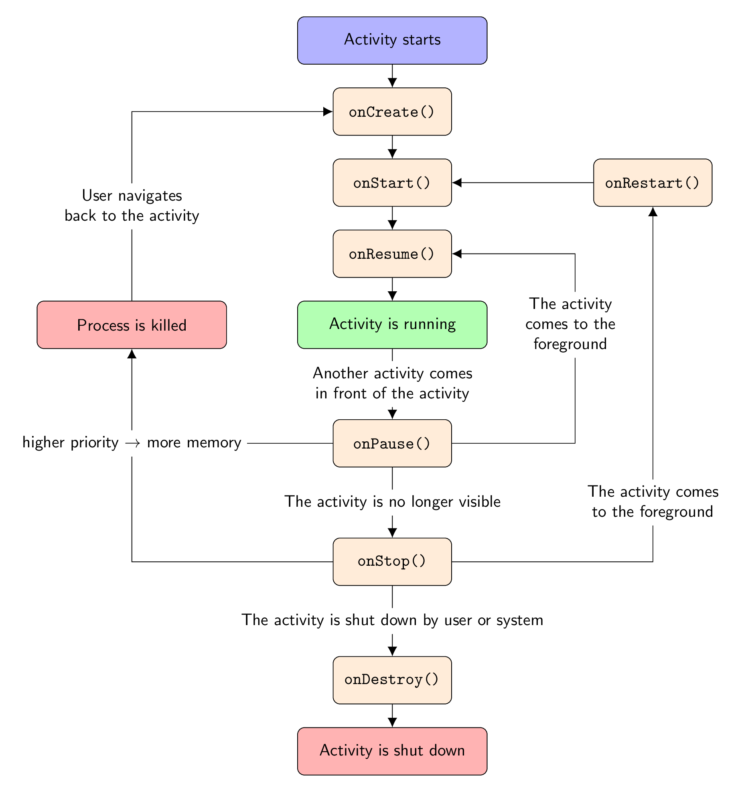

% Diagram of Android activity life cycle
% Author: Pavel Seda
\documentclass[border=10pt]{standalone}
\usepackage{tikz}
\usetikzlibrary{arrows.meta}
\tikzset{%
>={Latex[width=2mm,length=2mm]},
% Specifications for style of nodes:
base/.style = {rectangle, rounded corners, draw=black,
minimum width=4cm, minimum height=1cm,
text centered, font=\sffamily},
activityStarts/.style = {base, fill=blue!30},
startstop/.style = {base, fill=red!30},
activityRuns/.style = {base, fill=green!30},
process/.style = {base, minimum width=2.5cm, fill=orange!15,
font=\ttfamily},
}
\begin{document}
% Drawing part, node distance is 1.5 cm and every node
% is prefilled with white background
\begin{tikzpicture}[node distance=1.5cm,
every node/.style={fill=white, font=\sffamily}, align=center]
% Specification of nodes (position, etc.)
\node (start) [activityStarts] {Activity starts};
\node (onCreateBlock) [process, below of=start] {onCreate()};
\node (onStartBlock) [process, below of=onCreateBlock] {onStart()};
\node (onResumeBlock) [process, below of=onStartBlock] {onResume()};
\node (activityRuns) [activityRuns, below of=onResumeBlock]
{Activity is running};
\node (onPauseBlock) [process, below of=activityRuns, yshift=-1cm]
{onPause()};
\node (onStopBlock) [process, below of=onPauseBlock, yshift=-1cm]
{onStop()};
\node (onDestroyBlock) [process, below of=onStopBlock, yshift=-1cm]
{onDestroy()};
\node (onRestartBlock) [process, right of=onStartBlock, xshift=4cm]
{onRestart()};
\node (ActivityEnds) [startstop, left of=activityRuns, xshift=-4cm]
{Process is killed};
\node (ActivityDestroyed) [startstop, below of=onDestroyBlock]
{Activity is shut down};
% Specification of lines between nodes specified above
% with aditional nodes for description
\draw[->] (start) -- (onCreateBlock);
\draw[->] (onCreateBlock) -- (onStartBlock);
\draw[->] (onStartBlock) -- (onResumeBlock);
\draw[->] (onResumeBlock) -- (activityRuns);
\draw[->] (activityRuns) -- node[text width=4cm]
{Another activity comes in
front of the activity} (onPauseBlock);
\draw[->] (onPauseBlock) -- node {The activity is no longer visible}
(onStopBlock);
\draw[->] (onStopBlock) -- node {The activity is shut down by
user or system} (onDestroyBlock);
\draw[->] (onRestartBlock) -- (onStartBlock);
\draw[->] (onStopBlock) -| node[yshift=1.25cm, text width=3cm]
{The activity comes to the foreground}
(onRestartBlock);
\draw[->] (onDestroyBlock) -- (ActivityDestroyed);
\draw[->] (onPauseBlock) -| node(priorityXMemory)
{higher priority $\rightarrow$ more memory}
(ActivityEnds);
\draw (onStopBlock) -| (priorityXMemory);
\draw[->] (ActivityEnds) |- node [yshift=-2cm, text width=3.1cm]
{User navigates back to the activity}
(onCreateBlock);
\draw[->] (onPauseBlock.east) -- ++(2.6,0) -- ++(0,2) -- ++(0,2) --
node[xshift=1.2cm,yshift=-1.5cm, text width=2.5cm]
{The activity comes to the foreground}(onResumeBlock.east);
\end{tikzpicture}
\end{document}Created by David Li